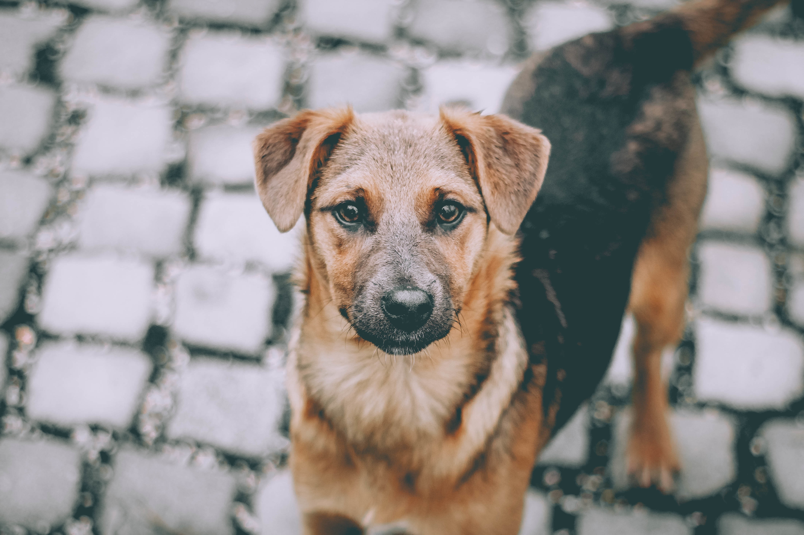
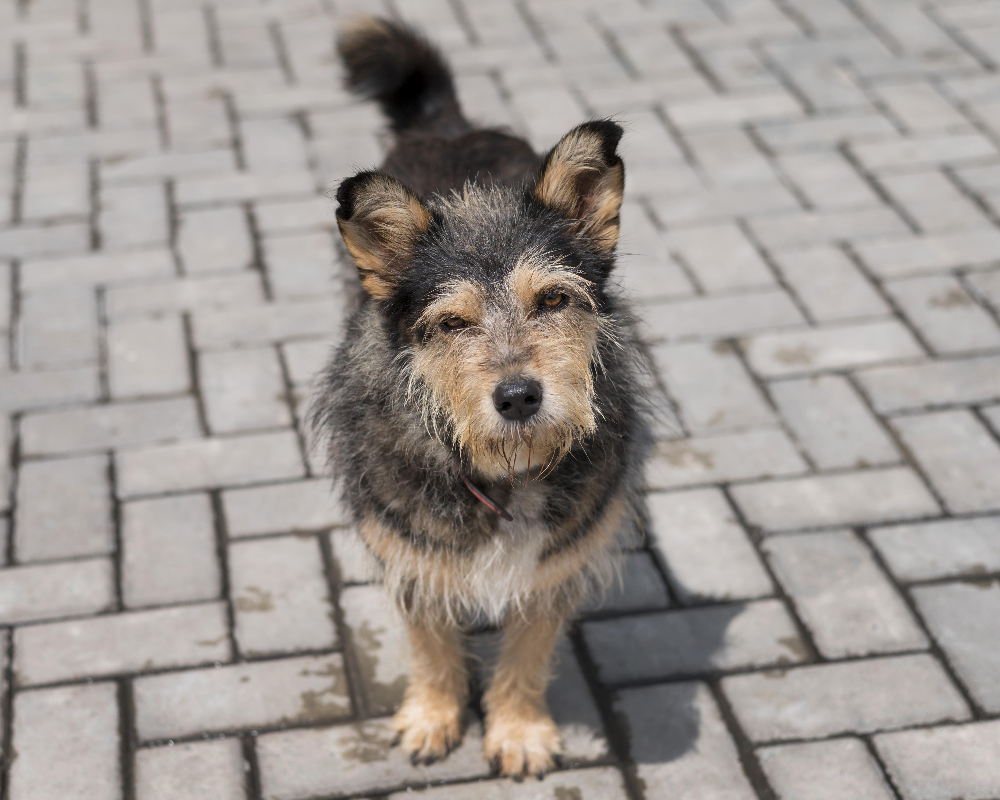
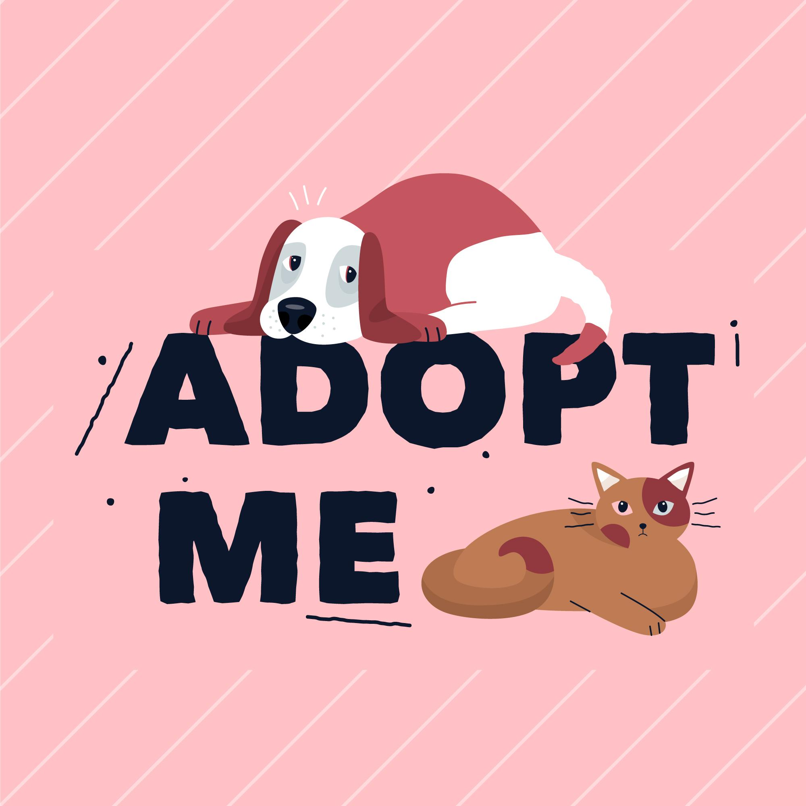
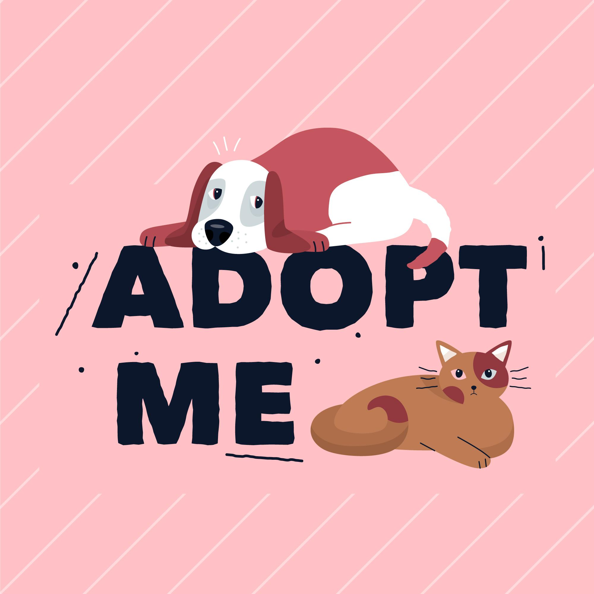

DogWeb
Money can buy you a fine dog,but only love can make
him wag his tail.
You can't buy happiness,but you can rescue it..
Money can buy you a fine dog,but only love can make
him wag his tail.
You can't buy happiness,but you can rescue it..


Street dogs, known in scientific literature as free-ranging urban dogs are unconfined dogs that live in cities.
They live virtually everywhere cities exist and the local human population allows, especially in the developing world.
Street dogs may be stray dogs, pets which have strayed from or are abandoned by their owners, or may be feral animals that have never been owned.
Street dogs may be stray purebreds, true mixed-breed dogs, or unbred landraces such as the Indian pariah dog. Street dog overpopulation can cause problems for the societies in which they live, so campaigns to spay and neuter them are sometimes implemented. They tend to differ from rural free-ranging dogs in their skill sets, socialization, and ecological effects.


Street puppies are in population rate,it's high,but its survivel rate is low
due to proper food ,shelter etc.
If you see any puppies,try to feed them and save their life
The average life of stray dogs is between 3.5 to 4 years. There are several causes of their deaths. It mainly includes accidents on roads and railway tracks, not getting enough food, drinking polluted water, getting tumors anywhere in the body, and often after getting beaten up by humans
  


23 dangerous dog breeds banned by the government in India, check complete list here
Addressing the increasing number of dog attack cases ..Read more at:
http://timesofindia.indiatimes.com/articleshow/108467739.cms?utm_source=contentofinterest&utm_medium=text&utm_campaign=cppst
+91 9360226510
mariganeshmr@gmail.com
This Above webpage was designed by ,